Data Science Foundations
Extras 1: Thinking Data¶
Instructor: Wesley Beckner
Contact: wesleybeckner@gmail.com
Today we are going to take our newfound knowledge from the course, and practice how we can leverage data to build predictive models. We'll start with a feature engineering problem on some dummy data. This will get us thinking creatively about problem solving. We will then pivot over to an Airbnb dataset. After performing some general, exploratory data analysis, we will solve the following business case: Airbnb is interested in using historical list prices from their airbnb hosts, to make pricing suggestions to new hosts. How can we use this existing datset to assist with this price listing suggestion?
Prepare Environment and Import Data¶
# basic packages
import pandas as pd
import numpy as np
import random
import copy
# visualization packages
import matplotlib.pyplot as plt
import plotly.express as px
import seaborn as sns; sns.set()
import graphviz
# stats packages
import scipy.stats as stats
from scipy.spatial.distance import cdist
import statsmodels.api as sm
from statsmodels.formula.api import ols
from statsmodels.stats.outliers_influence import variance_inflation_factor
# sklearn preprocessing
from sklearn.preprocessing import OneHotEncoder, StandardScaler, PolynomialFeatures
from sklearn.decomposition import PCA
from sklearn.impute import SimpleImputer
from sklearn.model_selection import train_test_split
from sklearn.pipeline import make_pipeline
# sklearn modeling
from sklearn.neighbors import KNeighborsRegressor
from sklearn.ensemble import RandomForestClassifier, RandomForestRegressor, AdaBoostClassifier, GradientBoostingClassifier
from sklearn.linear_model import LinearRegression, LogisticRegression
from sklearn.mixture import GaussianMixture
from sklearn.cluster import KMeans
# sklearn evaluation
from sklearn.metrics import mean_squared_error, r2_score, accuracy_score, silhouette_score, calinski_harabasz_score, classification_report, confusion_matrix
from sklearn.model_selection import GridSearchCV, cross_val_score
Warm Up¶
Add aditional feature(s) to X to predict y with a model limited to a linear classification boundary
from sklearn.datasets import make_circles
X, y = make_circles(random_state=42, noise=.01)
relabel = dict(zip([0,1,2,3],[0,1,0,1]))
y = np.vectorize(relabel.get)(y)
plt.scatter(X[:,0], X[:,1], c=y, cmap='viridis')
<matplotlib.collections.PathCollection at 0x7f211fc48550>

X2 = (X**2).sum(axis=1)
X_ = np.hstack((X,X2.reshape(-1,1)))
We can separate:
px.scatter_3d(x=X_[:,0], y=X_[:,1], z=X_[:,2], color=y)
and now predict
model = LogisticRegression()
model.fit(X_, y)
y_pred = model.predict(X_)
r2_score(y, y_pred)
1.0
Build a Baseline¶
Exploratory Data Analysis¶
which columns are numerical, string; which contain nans/nulls; what is the VIF between features
airbnb = pd.read_csv("https://raw.githubusercontent.com/wesleybeckner/datasets/main/datasets/airbnb/AB_NYC_2019.csv")
airbnb.shape
(48895, 16)
airbnb.head()
| id | name | host_id | host_name | neighbourhood_group | neighbourhood | latitude | longitude | room_type | price | minimum_nights | number_of_reviews | last_review | reviews_per_month | calculated_host_listings_count | availability_365 | |
|---|---|---|---|---|---|---|---|---|---|---|---|---|---|---|---|---|
| 0 | 2539 | Clean & quiet apt home by the park | 2787 | John | Brooklyn | Kensington | 40.64749 | -73.97237 | Private room | 149 | 1 | 9 | 2018-10-19 | 0.21 | 6 | 365 |
| 1 | 2595 | Skylit Midtown Castle | 2845 | Jennifer | Manhattan | Midtown | 40.75362 | -73.98377 | Entire home/apt | 225 | 1 | 45 | 2019-05-21 | 0.38 | 2 | 355 |
| 2 | 3647 | THE VILLAGE OF HARLEM....NEW YORK ! | 4632 | Elisabeth | Manhattan | Harlem | 40.80902 | -73.94190 | Private room | 150 | 3 | 0 | NaN | NaN | 1 | 365 |
| 3 | 3831 | Cozy Entire Floor of Brownstone | 4869 | LisaRoxanne | Brooklyn | Clinton Hill | 40.68514 | -73.95976 | Entire home/apt | 89 | 1 | 270 | 2019-07-05 | 4.64 | 1 | 194 |
| 4 | 5022 | Entire Apt: Spacious Studio/Loft by central park | 7192 | Laura | Manhattan | East Harlem | 40.79851 | -73.94399 | Entire home/apt | 80 | 10 | 9 | 2018-11-19 | 0.10 | 1 | 0 |
airbnb.dtypes
id int64
name object
host_id int64
host_name object
neighbourhood_group object
neighbourhood object
latitude float64
longitude float64
room_type object
price int64
minimum_nights int64
number_of_reviews int64
last_review object
reviews_per_month float64
calculated_host_listings_count int64
availability_365 int64
dtype: object
airbnb.isnull().sum(axis=0)
id 0
name 16
host_id 0
host_name 21
neighbourhood_group 0
neighbourhood 0
latitude 0
longitude 0
room_type 0
price 0
minimum_nights 0
number_of_reviews 0
last_review 10052
reviews_per_month 10052
calculated_host_listings_count 0
availability_365 0
dtype: int64
airbnb.nunique()
id 48895
name 47905
host_id 37457
host_name 11452
neighbourhood_group 5
neighbourhood 221
latitude 19048
longitude 14718
room_type 3
price 674
minimum_nights 109
number_of_reviews 394
last_review 1764
reviews_per_month 937
calculated_host_listings_count 47
availability_365 366
dtype: int64
plt.figure(figsize=(10,6))
sns.scatterplot(x=airbnb.longitude,y=airbnb.latitude,hue=airbnb.neighbourhood_group)
plt.ioff()
<matplotlib.pyplot._IoffContext at 0x7f211d15bb20>

X = airbnb.copy()
reviews_per_month has some 'nans'
X_num = X.select_dtypes(exclude='object')
X_num.tail()
| id | host_id | latitude | longitude | price | minimum_nights | number_of_reviews | reviews_per_month | calculated_host_listings_count | availability_365 | |
|---|---|---|---|---|---|---|---|---|---|---|
| 48890 | 36484665 | 8232441 | 40.67853 | -73.94995 | 70 | 2 | 0 | NaN | 2 | 9 |
| 48891 | 36485057 | 6570630 | 40.70184 | -73.93317 | 40 | 4 | 0 | NaN | 2 | 36 |
| 48892 | 36485431 | 23492952 | 40.81475 | -73.94867 | 115 | 10 | 0 | NaN | 1 | 27 |
| 48893 | 36485609 | 30985759 | 40.75751 | -73.99112 | 55 | 1 | 0 | NaN | 6 | 2 |
| 48894 | 36487245 | 68119814 | 40.76404 | -73.98933 | 90 | 7 | 0 | NaN | 1 | 23 |
X_num.head()
| id | host_id | latitude | longitude | price | minimum_nights | number_of_reviews | reviews_per_month | calculated_host_listings_count | availability_365 | |
|---|---|---|---|---|---|---|---|---|---|---|
| 0 | 2539 | 2787 | 40.64749 | -73.97237 | 149 | 1 | 9 | 0.21 | 6 | 365 |
| 1 | 2595 | 2845 | 40.75362 | -73.98377 | 225 | 1 | 45 | 0.38 | 2 | 355 |
| 2 | 3647 | 4632 | 40.80902 | -73.94190 | 150 | 3 | 0 | NaN | 1 | 365 |
| 3 | 3831 | 4869 | 40.68514 | -73.95976 | 89 | 1 | 270 | 4.64 | 1 | 194 |
| 4 | 5022 | 7192 | 40.79851 | -73.94399 | 80 | 10 | 9 | 0.10 | 1 | 0 |
X_num.describe()
| id | host_id | latitude | longitude | price | minimum_nights | number_of_reviews | reviews_per_month | calculated_host_listings_count | availability_365 | |
|---|---|---|---|---|---|---|---|---|---|---|
| count | 4.889500e+04 | 4.889500e+04 | 48895.000000 | 48895.000000 | 48895.000000 | 48895.000000 | 48895.000000 | 38843.000000 | 48895.000000 | 48895.000000 |
| mean | 1.901714e+07 | 6.762001e+07 | 40.728949 | -73.952170 | 152.720687 | 7.029962 | 23.274466 | 1.373221 | 7.143982 | 112.781327 |
| std | 1.098311e+07 | 7.861097e+07 | 0.054530 | 0.046157 | 240.154170 | 20.510550 | 44.550582 | 1.680442 | 32.952519 | 131.622289 |
| min | 2.539000e+03 | 2.438000e+03 | 40.499790 | -74.244420 | 0.000000 | 1.000000 | 0.000000 | 0.010000 | 1.000000 | 0.000000 |
| 25% | 9.471945e+06 | 7.822033e+06 | 40.690100 | -73.983070 | 69.000000 | 1.000000 | 1.000000 | 0.190000 | 1.000000 | 0.000000 |
| 50% | 1.967728e+07 | 3.079382e+07 | 40.723070 | -73.955680 | 106.000000 | 3.000000 | 5.000000 | 0.720000 | 1.000000 | 45.000000 |
| 75% | 2.915218e+07 | 1.074344e+08 | 40.763115 | -73.936275 | 175.000000 | 5.000000 | 24.000000 | 2.020000 | 2.000000 | 227.000000 |
| max | 3.648724e+07 | 2.743213e+08 | 40.913060 | -73.712990 | 10000.000000 | 1250.000000 | 629.000000 | 58.500000 | 327.000000 | 365.000000 |
X.dropna(inplace=True)
X_num = X.select_dtypes(exclude='object')
vif = [variance_inflation_factor(X_num.values, i) for i in range(X_num.shape[1])]
pd.DataFrame(vif, index=X_num.columns)
| 0 | |
|---|---|
| id | 2.180074 |
| host_id | 2.836905 |
| latitude | 0.775769 |
| longitude | 425502.981678 |
| price | 1.012423 |
| minimum_nights | 1.039144 |
| number_of_reviews | 2.348200 |
| reviews_per_month | 2.314318 |
| calculated_host_listings_count | 1.067389 |
| availability_365 | 1.139558 |
X_num.drop('longitude', axis=1, inplace=True)
/home/wbeckner/anaconda3/envs/py39/lib/python3.9/site-packages/pandas/core/frame.py:4906: SettingWithCopyWarning:
A value is trying to be set on a copy of a slice from a DataFrame
See the caveats in the documentation: https://pandas.pydata.org/pandas-docs/stable/user_guide/indexing.html#returning-a-view-versus-a-copy
X_num
| id | host_id | latitude | price | minimum_nights | number_of_reviews | reviews_per_month | calculated_host_listings_count | availability_365 | |
|---|---|---|---|---|---|---|---|---|---|
| 0 | 2539 | 2787 | 40.64749 | 149 | 1 | 9 | 0.21 | 6 | 365 |
| 1 | 2595 | 2845 | 40.75362 | 225 | 1 | 45 | 0.38 | 2 | 355 |
| 3 | 3831 | 4869 | 40.68514 | 89 | 1 | 270 | 4.64 | 1 | 194 |
| 4 | 5022 | 7192 | 40.79851 | 80 | 10 | 9 | 0.10 | 1 | 0 |
| 5 | 5099 | 7322 | 40.74767 | 200 | 3 | 74 | 0.59 | 1 | 129 |
| ... | ... | ... | ... | ... | ... | ... | ... | ... | ... |
| 48782 | 36425863 | 83554966 | 40.78099 | 129 | 1 | 1 | 1.00 | 1 | 147 |
| 48790 | 36427429 | 257683179 | 40.75104 | 45 | 1 | 1 | 1.00 | 6 | 339 |
| 48799 | 36438336 | 211644523 | 40.54179 | 235 | 1 | 1 | 1.00 | 1 | 87 |
| 48805 | 36442252 | 273841667 | 40.80787 | 100 | 1 | 2 | 2.00 | 1 | 40 |
| 48852 | 36455809 | 74162901 | 40.69805 | 30 | 1 | 1 | 1.00 | 1 | 1 |
38821 rows × 9 columns
vif = [variance_inflation_factor(X_num.values, i) for i in range(X_num.shape[1])]
pd.DataFrame(vif, index=X_num.columns)
| 0 | |
|---|---|
| id | 8.424770 |
| host_id | 2.827543 |
| latitude | 7.297302 |
| price | 1.538975 |
| minimum_nights | 1.157468 |
| number_of_reviews | 3.215893 |
| reviews_per_month | 3.858006 |
| calculated_host_listings_count | 1.106414 |
| availability_365 | 2.035592 |
Feature Engineering¶
Say we want to predict pricing, using an ML model. How would you build your features?
Based on the number of null values, what would you do with the last_review and reviews_per_month column?
X = airbnb.copy()
y = X.pop('price')
X_cat = X.select_dtypes(include='object')
X_cat.head()
| name | host_name | neighbourhood_group | neighbourhood | room_type | last_review | |
|---|---|---|---|---|---|---|
| 0 | Clean & quiet apt home by the park | John | Brooklyn | Kensington | Private room | 2018-10-19 |
| 1 | Skylit Midtown Castle | Jennifer | Manhattan | Midtown | Entire home/apt | 2019-05-21 |
| 2 | THE VILLAGE OF HARLEM....NEW YORK ! | Elisabeth | Manhattan | Harlem | Private room | NaN |
| 3 | Cozy Entire Floor of Brownstone | LisaRoxanne | Brooklyn | Clinton Hill | Entire home/apt | 2019-07-05 |
| 4 | Entire Apt: Spacious Studio/Loft by central park | Laura | Manhattan | East Harlem | Entire home/apt | 2018-11-19 |
based on the number of unique columns, we may want to remove name, host_name, and last_review
X_cat.nunique()
name 47905
host_name 11452
neighbourhood_group 5
neighbourhood 221
room_type 3
last_review 1764
dtype: int64
X_cat = X_cat.drop(['name', 'host_name', 'last_review'], axis=1)
enc = OneHotEncoder()
X_enc = enc.fit_transform(X_cat).toarray()
And now we deal with the numerical columns
X_num = X.select_dtypes(exclude='object')
X_num.head()
| id | host_id | latitude | longitude | minimum_nights | number_of_reviews | reviews_per_month | calculated_host_listings_count | availability_365 | |
|---|---|---|---|---|---|---|---|---|---|
| 0 | 2539 | 2787 | 40.64749 | -73.97237 | 1 | 9 | 0.21 | 6 | 365 |
| 1 | 2595 | 2845 | 40.75362 | -73.98377 | 1 | 45 | 0.38 | 2 | 355 |
| 2 | 3647 | 4632 | 40.80902 | -73.94190 | 3 | 0 | NaN | 1 | 365 |
| 3 | 3831 | 4869 | 40.68514 | -73.95976 | 1 | 270 | 4.64 | 1 | 194 |
| 4 | 5022 | 7192 | 40.79851 | -73.94399 | 10 | 9 | 0.10 | 1 | 0 |
both id and host_id will be highly cardinal without telling us much about the behavior of unseen data. We should remove them. We'll also drop the columns with nans for now
X_num = X_num.drop(['id', 'host_id'], axis=1)
X_num = X_num.dropna(axis=1)
X_enc_df = pd.DataFrame(X_enc, columns=enc.get_feature_names_out())
X_feat = pd.concat((X_enc_df, X_num), axis=1)
X_feat.head()
| neighbourhood_group_Bronx | neighbourhood_group_Brooklyn | neighbourhood_group_Manhattan | neighbourhood_group_Queens | neighbourhood_group_Staten Island | neighbourhood_Allerton | neighbourhood_Arden Heights | neighbourhood_Arrochar | neighbourhood_Arverne | neighbourhood_Astoria | ... | neighbourhood_Woodside | room_type_Entire home/apt | room_type_Private room | room_type_Shared room | latitude | longitude | minimum_nights | number_of_reviews | calculated_host_listings_count | availability_365 | |
|---|---|---|---|---|---|---|---|---|---|---|---|---|---|---|---|---|---|---|---|---|---|
| 0 | 0.0 | 1.0 | 0.0 | 0.0 | 0.0 | 0.0 | 0.0 | 0.0 | 0.0 | 0.0 | ... | 0.0 | 0.0 | 1.0 | 0.0 | 40.64749 | -73.97237 | 1 | 9 | 6 | 365 |
| 1 | 0.0 | 0.0 | 1.0 | 0.0 | 0.0 | 0.0 | 0.0 | 0.0 | 0.0 | 0.0 | ... | 0.0 | 1.0 | 0.0 | 0.0 | 40.75362 | -73.98377 | 1 | 45 | 2 | 355 |
| 2 | 0.0 | 0.0 | 1.0 | 0.0 | 0.0 | 0.0 | 0.0 | 0.0 | 0.0 | 0.0 | ... | 0.0 | 0.0 | 1.0 | 0.0 | 40.80902 | -73.94190 | 3 | 0 | 1 | 365 |
| 3 | 0.0 | 1.0 | 0.0 | 0.0 | 0.0 | 0.0 | 0.0 | 0.0 | 0.0 | 0.0 | ... | 0.0 | 1.0 | 0.0 | 0.0 | 40.68514 | -73.95976 | 1 | 270 | 1 | 194 |
| 4 | 0.0 | 0.0 | 1.0 | 0.0 | 0.0 | 0.0 | 0.0 | 0.0 | 0.0 | 0.0 | ... | 0.0 | 1.0 | 0.0 | 0.0 | 40.79851 | -73.94399 | 10 | 9 | 1 | 0 |
5 rows × 235 columns
Feature Transformation¶
What features do you think will cause the most problems if untransformed?
Scale and Center all but the target variable, price
scaler = StandardScaler()
X_std_num = scaler.fit_transform(X_num)
X_std = np.hstack((X_enc, X_std_num))
print(X_std.shape)
print(y.shape)
(48895, 235)
(48895,)
Model Baseline¶
X_train, X_test, y_train, y_test = train_test_split(X_std, y, train_size=0.8, random_state=42)
model = LinearRegression()
model.fit(X_train, y_train)
y_pred = model.predict(X_test)
r2_score(y_train, model.predict(X_train))
0.11264603204210533
r2_score(y_test, y_pred)
-1.563294115330747e+17
model = RandomForestRegressor()
model.fit(X_train, y_train)
r2_score(y_train, model.predict(X_train))
0.8597830223730762
r2_score(y_test, model.predict(X_test))
0.10233675407266163
both of these results from the LinearRegression and RandomForest models indicate overfitting
Back to Feature Engineering¶
- 🌟 - keep this feature
- 💡 - interesting behavior discovered
- 👎 - don't keep this feature
- 🔮 - try for next time
To try:
- drop nan rows not columns
- remove outliers (filter by group)
- PCA of one hot encoded vectors (will help with linear model)
- transform 'last review date' (str) into 'days since last review' (number)
🌟 NaNs - Drop Row-wise¶
X = airbnb.copy()
X = X.dropna(axis=0)
y = X.pop('price')
X_num = X.select_dtypes(exclude='object')
X_num = X_num.drop(['id', 'host_id'], axis=1)
X_num.head()
| latitude | longitude | minimum_nights | number_of_reviews | reviews_per_month | calculated_host_listings_count | availability_365 | |
|---|---|---|---|---|---|---|---|
| 0 | 40.64749 | -73.97237 | 1 | 9 | 0.21 | 6 | 365 |
| 1 | 40.75362 | -73.98377 | 1 | 45 | 0.38 | 2 | 355 |
| 3 | 40.68514 | -73.95976 | 1 | 270 | 4.64 | 1 | 194 |
| 4 | 40.79851 | -73.94399 | 10 | 9 | 0.10 | 1 | 0 |
| 5 | 40.74767 | -73.97500 | 3 | 74 | 0.59 | 1 | 129 |
X_cat = X.select_dtypes(include='object')
X_cat = X_cat.drop(['name', 'host_name', 'last_review'], axis=1)
enc = OneHotEncoder()
X_enc = enc.fit_transform(X_cat).toarray()
scaler = StandardScaler()
X_std_num = scaler.fit_transform(X_num)
X_std = np.hstack((X_enc, X_std_num))
print(X_std.shape)
print(y.shape)
(38821, 233)
(38821,)
Train/Eval¶
X_train, X_test, y_train, y_test = train_test_split(X_std, y, train_size=0.8, random_state=42)
model = RandomForestRegressor(n_jobs=-1)
model.fit(X_train, y_train)
print(f"Train R2: {r2_score(y_train, model.predict(X_train)):.2f}")
print(f"Test R2: {r2_score(y_test, model.predict(X_test)):.2f}")
Train R2: 0.88
Test R2: 0.23
💡 Outliers - by Borough¶
X = airbnb.copy()
X = X.dropna(axis=0)
fig, ax = plt.subplots(figsize=(10,10))
sns.boxplot(x=X['neighbourhood_group'], y=X['price'], ax=ax)
# ax.set_ylim(0, 1500)
<AxesSubplot:xlabel='neighbourhood_group', ylabel='price'>
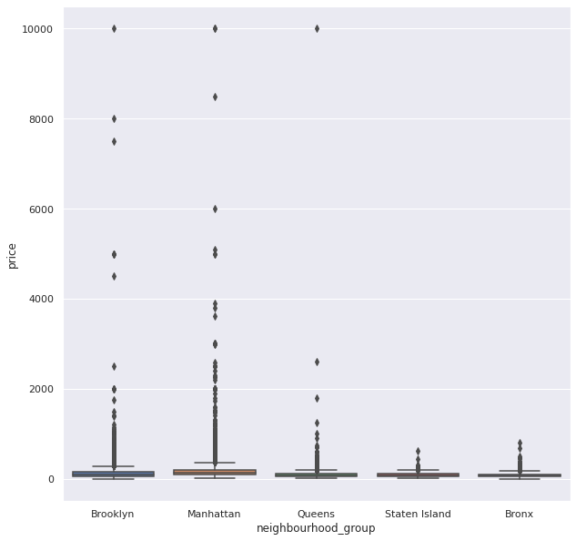
fig, ax = plt.subplots(figsize=(15,10))
sns.kdeplot(hue=X['neighbourhood_group'], x=X['price'], ax=ax)
<AxesSubplot:xlabel='price', ylabel='Density'>
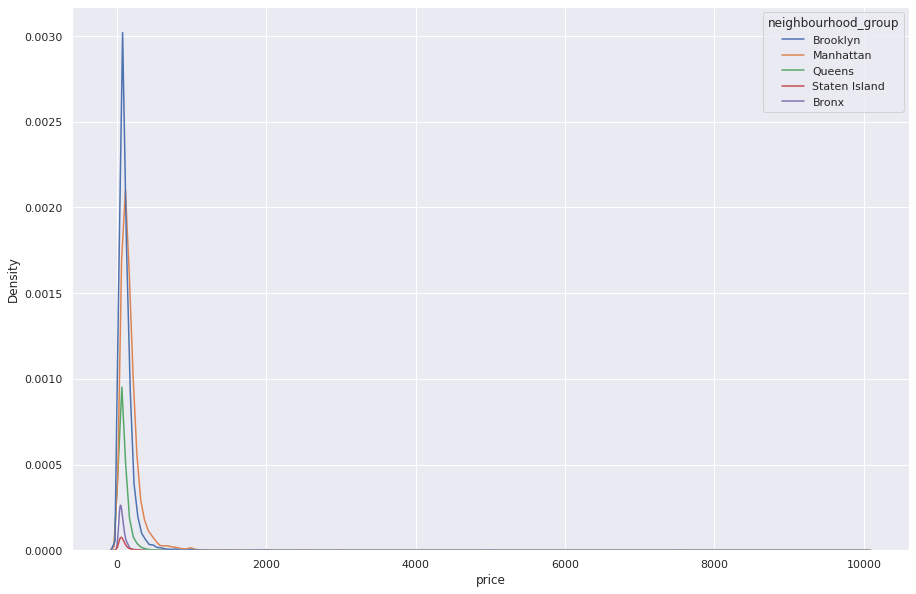
X = X.loc[X.groupby('neighbourhood_group').apply(lambda x: x['price'] < (x['price'].std()*3)).unstack(level=0).any(axis=1)]
fig, (ax, ax_) = plt.subplots(1, 2, figsize=(20,10))
sns.boxplot(x=X['neighbourhood_group'], y=X['price'], ax=ax)
sns.kdeplot(hue=X['neighbourhood_group'], x=X['price'], ax=ax_)
<AxesSubplot:xlabel='price', ylabel='Density'>
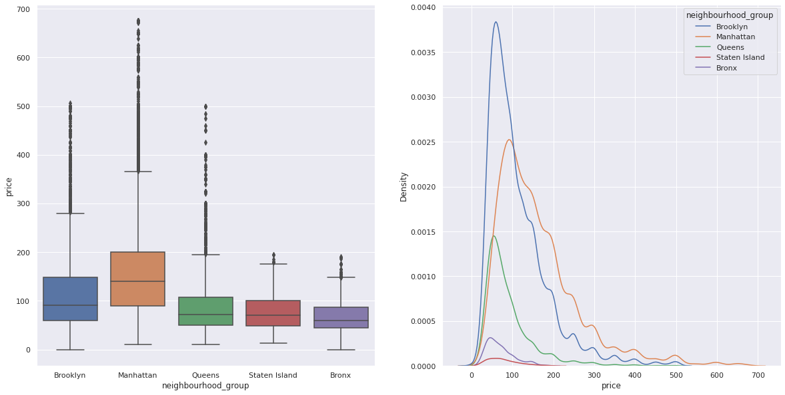
y = X.pop('price')
X_num = X.select_dtypes(exclude='object')
X_num = X_num.drop(['id', 'host_id'], axis=1)
X_cat = X.select_dtypes(include='object')
X_cat = X_cat.drop(['name', 'host_name', 'last_review'], axis=1)
enc = OneHotEncoder()
X_enc = enc.fit_transform(X_cat).toarray()
scaler = StandardScaler()
X_std_num = scaler.fit_transform(X_num)
X_std = np.hstack((X_enc, X_std_num))
print(X_std.shape)
print(y.shape)
(38309, 232)
(38309,)
Train/Eval¶
X_train, X_test, y_train, y_test = train_test_split(X_std, y, train_size=0.8, random_state=42)
model = RandomForestRegressor(n_jobs=-1)
model.fit(X_train, y_train)
print(f"Train R2: {r2_score(y_train, model.predict(X_train)):.2f}")
print(f"Test R2: {r2_score(y_test, model.predict(X_test)):.2f}")
Train R2: 0.93
Test R2: 0.52
fig, (ax, ax_) = plt.subplots(1, 2, figsize=(10,5))
ax.plot(y_train, model.predict(X_train), ls='', marker=',')
ax_.plot(y_test, model.predict(X_test), ls='', marker=',')
[<matplotlib.lines.Line2D at 0x7f211ce29c40>]
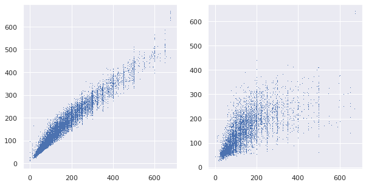
🌟 Bin Prices, Classifier Model¶
X = airbnb.copy()
X = X.dropna(axis=0)
y = X.pop('price').values
Y = y.reshape(-1,1)
labels = y.copy()
labels[labels <= np.quantile(y, .25)] = 1
labels[(labels > np.quantile(y, .25)) & (labels <= np.quantile(y, .5))] = 2
labels[(labels > np.quantile(y, .5)) & (labels <= np.quantile(y, .75))] = 3
labels[(labels > np.quantile(y, .75))] = 4
y = labels
X_num = X.select_dtypes(exclude='object')
X_num = X_num.drop(['id', 'host_id'], axis=1)
X_cat = X.select_dtypes(include='object')
X_cat = X_cat.drop(['name', 'host_name', 'last_review'], axis=1)
enc = OneHotEncoder()
X_enc = enc.fit_transform(X_cat).toarray()
scaler = StandardScaler()
X_std_num = scaler.fit_transform(X_num)
X_std = np.hstack((X_enc, X_std_num))
print(X_std.shape)
print(y.shape)
(38821, 233)
(38821,)
Train/Eval¶
X_train, X_test, y_train, y_test = train_test_split(X_std, y, train_size=0.8, random_state=42)
model = RandomForestClassifier(n_jobs=-1)
model.fit(X_train, y_train)
print(f"Train Acc: {accuracy_score(y_train, model.predict(X_train)):.2f}")
print(f"Test Acc: {accuracy_score(y_test, model.predict(X_test)):.2f}")
Train Acc: 1.00
Test Acc: 0.60
y_pred = model.predict(X_train)
print(classification_report(y_train, y_pred, zero_division=0))
fig, ax = plt.subplots(1, 1, figsize = (8,7))
sns.heatmap(confusion_matrix(y_train,y_pred), annot=True, ax=ax)
precision recall f1-score support
1 1.00 1.00 1.00 7986
2 1.00 1.00 1.00 7594
3 1.00 1.00 1.00 7878
4 1.00 1.00 1.00 7598
accuracy 1.00 31056
macro avg 1.00 1.00 1.00 31056
weighted avg 1.00 1.00 1.00 31056
<AxesSubplot:>
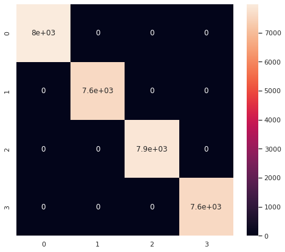
y_pred = model.predict(X_test)
print(classification_report(y_test, y_pred, zero_division=0))
fig, ax = plt.subplots(1, 1, figsize = (8,7))
sns.heatmap(confusion_matrix(y_test,y_pred), annot=True, ax=ax)
precision recall f1-score support
1 0.70 0.80 0.74 1998
2 0.49 0.44 0.46 1846
3 0.50 0.47 0.48 1986
4 0.66 0.67 0.66 1935
accuracy 0.60 7765
macro avg 0.59 0.59 0.59 7765
weighted avg 0.59 0.60 0.59 7765
<AxesSubplot:>
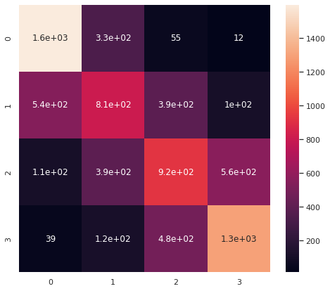
👎 Cluster Prices, Classifier Model¶
X = airbnb.copy()
X = X.dropna(axis=0)
y = X.pop('price').values
Y = y.reshape(-1,1)
distortions = []
inertias = []
silhouette = []
variance = []
krange = 20
for k in range(1,krange):
kmeans = KMeans(n_clusters=k)
kmeans.fit(Y)
y_kmeans = kmeans.predict(Y)
labels = kmeans.labels_
distortions.append(sum(np.min(cdist(Y, kmeans.cluster_centers_,
'euclidean'), axis=1)) / Y.shape[0])
inertias.append(kmeans.inertia_)
if k > 1:
silhouette.append(silhouette_score(Y, labels, metric = 'euclidean'))
variance.append(calinski_harabasz_score(Y, labels))
fig, [[ax1, ax2], [ax3, ax4]] = plt.subplots(2, 2, figsize=(10,10))
ax1.plot(range(1,krange), distortions)
ax2.plot(range(1,krange), inertias)
ax3.plot(range(2,krange), silhouette)
ax4.plot(range(2,krange), variance)
[<matplotlib.lines.Line2D at 0x7f211ca89100>]
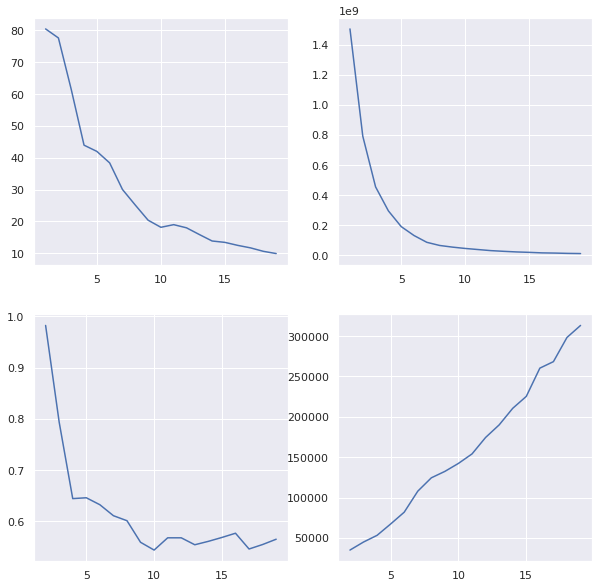
kmeans = KMeans(n_clusters=5)
kmeans.fit(Y)
y_kmeans = kmeans.predict(Y)
labels = kmeans.labels_
ks = kmeans.cluster_centers_
ks = ks.flatten()
ks = np.sort(ks)
ks
array([ 87.29374822, 230.74992332, 647.13125 , 2728.375 ,
8749.75 ])
edges = (np.diff(ks)/2 + ks[:-1]).astype(int)
bins = []
for idx, edge in enumerate(edges):
if idx == 0:
bins.append(f"0-{edge}")
elif idx < len(edges):
bins.append(f"{edges[idx-1]}-{edge}")
bins.append(f"{edge}+")
bins
['0-159', '159-438', '438-1687', '1687-5739', '5739+']
pd.DataFrame(labels).value_counts(sort=False)
0 9651
1 8
2 961
3 28153
4 48
dtype: int64
y = labels
X_num = X.select_dtypes(exclude='object')
X_num = X_num.drop(['id', 'host_id'], axis=1)
X_cat = X.select_dtypes(include='object')
X_cat = X_cat.drop(['name', 'host_name', 'last_review'], axis=1)
enc = OneHotEncoder()
X_enc = enc.fit_transform(X_cat).toarray()
scaler = StandardScaler()
X_std_num = scaler.fit_transform(X_num)
X_std = np.hstack((X_enc, X_std_num))
print(X_std.shape)
print(y.shape)
(38821, 233)
(38821,)
Train/Eval¶
X_train, X_test, y_train, y_test = train_test_split(X_std, y, train_size=0.8, random_state=42)
model = RandomForestClassifier(n_jobs=-1)
model.fit(X_train, y_train)
print(f"Train Acc: {accuracy_score(y_train, model.predict(X_train)):.2f}")
print(f"Test Acc: {accuracy_score(y_test, model.predict(X_test)):.2f}")
Train Acc: 1.00
Test Acc: 0.81
y_pred = model.predict(X_train)
print(classification_report(y_train, y_pred, zero_division=0))
fig, ax = plt.subplots(1, 1, figsize = (8,7))
sns.heatmap(confusion_matrix(y_train,y_pred), annot=True, ax=ax)
precision recall f1-score support
0 1.00 1.00 1.00 7687
1 1.00 1.00 1.00 7
2 1.00 1.00 1.00 762
3 1.00 1.00 1.00 22561
4 1.00 1.00 1.00 39
accuracy 1.00 31056
macro avg 1.00 1.00 1.00 31056
weighted avg 1.00 1.00 1.00 31056
<AxesSubplot:>
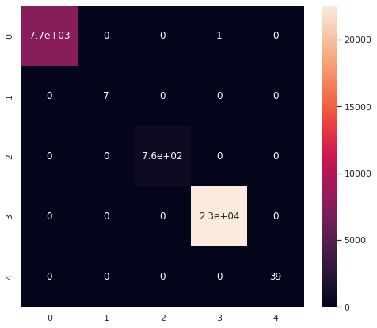
y_pred = model.predict(X_test)
print(classification_report(y_test, y_pred, zero_division=0))
fig, ax = plt.subplots(1, 1, figsize = (8,7))
sns.heatmap(confusion_matrix(y_test,y_pred), annot=True, ax=ax)
precision recall f1-score support
0 0.64 0.60 0.62 1964
1 0.00 0.00 0.00 1
2 0.71 0.14 0.23 199
3 0.86 0.91 0.88 5592
4 0.67 0.22 0.33 9
accuracy 0.81 7765
macro avg 0.58 0.37 0.41 7765
weighted avg 0.80 0.81 0.80 7765
<AxesSubplot:>
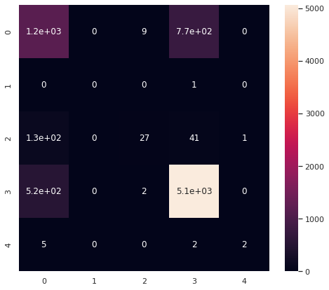
🌟 PCA, Feature Reduction¶
The results in Bin Price, Classifier Model indicate overfitting. Let's see if we can reduce the cardinality of our One Hot features
X = airbnb.copy()
X = X.dropna(axis=0)
y = X.pop('price').values
Y = y.reshape(-1,1)
bins = 10
quantiles = bins + 1
labels = y.copy()
for idx, quant in enumerate(np.linspace(0,1,quantiles)):
if idx == 0:
prev_quant = quant
continue
if idx == 1:
labels[labels <= np.quantile(y, quant)] = 1
elif quant < 1:
labels[(labels > np.quantile(y, prev_quant)) & (labels <= np.quantile(y, quant))] = idx
else:
labels[(labels > np.quantile(y, prev_quant))] = idx
prev_quant = quant
print([np.quantile(y, quant) for quant in np.linspace(0,1,quantiles)])
y = labels
X_num = X.select_dtypes(exclude='object')
X_num = X_num.drop(['id', 'host_id'], axis=1)
X_cat = X.select_dtypes(include='object')
X_cat = X_cat.drop(['name', 'host_name', 'last_review'], axis=1)
enc = OneHotEncoder()
X_enc = enc.fit_transform(X_cat).toarray()
pca = PCA(n_components=3)
X_pca = pca.fit_transform(X_enc)
print(pca.explained_variance_)
scaler = StandardScaler()
X_std_num = scaler.fit_transform(X_num)
X_std = np.hstack((X_pca, X_std_num))
print(X_std.shape)
print(y.shape)
[0.0, 49.0, 60.0, 75.0, 90.0, 101.0, 125.0, 150.0, 190.0, 250.0, 10000.0]
[0.52595687 0.42901998 0.16673031]
(38821, 10)
(38821,)
Train/Eval¶
X_train, X_test, y_train, y_test = train_test_split(X_std, y, train_size=0.8, random_state=42)
model = RandomForestClassifier(n_jobs=-1)
model.fit(X_train, y_train)
print(f"Train Acc: {accuracy_score(y_train, model.predict(X_train)):.2f}")
print(f"Test Acc: {accuracy_score(y_test, model.predict(X_test)):.2f}")
y_pred = model.predict(X_train)
print("Training Confusion Matrix")
print(classification_report(y_train, y_pred, zero_division=0))
fig, ax = plt.subplots(1, 1, figsize = (8,7))
sns.heatmap(confusion_matrix(y_train,y_pred), annot=True, ax=ax)
plt.show()
y_pred = model.predict(X_test)
print("Testing Confusion Matrix")
print(classification_report(y_test, y_pred, zero_division=0))
fig, ax = plt.subplots(1, 1, figsize = (8,7))
sns.heatmap(confusion_matrix(y_test,y_pred), annot=True, ax=ax)
Train Acc: 1.00
Test Acc: 0.32
Training Confusion Matrix
precision recall f1-score support
1 1.00 1.00 1.00 3148
2 1.00 1.00 1.00 3241
3 1.00 1.00 1.00 3458
4 1.00 1.00 1.00 3075
5 1.00 1.00 1.00 2658
6 1.00 1.00 1.00 3198
7 1.00 1.00 1.00 3426
8 1.00 1.00 1.00 2759
9 1.00 1.00 1.00 3274
10 1.00 1.00 1.00 2819
accuracy 1.00 31056
macro avg 1.00 1.00 1.00 31056
weighted avg 1.00 1.00 1.00 31056
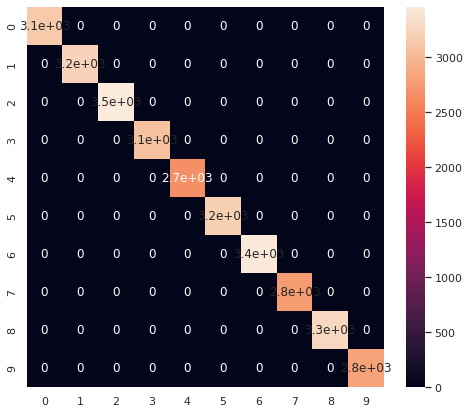
Testing Confusion Matrix
precision recall f1-score support
1 0.51 0.56 0.54 840
2 0.36 0.41 0.39 794
3 0.30 0.31 0.30 824
4 0.26 0.23 0.25 782
5 0.17 0.15 0.16 604
6 0.24 0.23 0.24 813
7 0.25 0.26 0.25 842
8 0.25 0.19 0.22 736
9 0.32 0.35 0.33 818
10 0.46 0.48 0.47 712
accuracy 0.32 7765
macro avg 0.31 0.32 0.31 7765
weighted avg 0.32 0.32 0.32 7765
<AxesSubplot:>
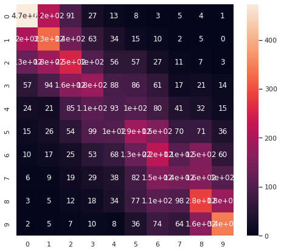
🔮 Last Review Date, PCA for Outlier Removal, Impute¶
If I wanted to spend more time on this:
- remove outliers with PCA
- the issue with our outlier removal previously, is that we are conditioning on
y. As we can't knowyin a production setting, this makes our model suspetible to underdetecting true, high-y value signal - removing outliers based on the input,
Xis prefered, and we might try this with PCA
- the issue with our outlier removal previously, is that we are conditioning on
- turn
last_review_dateinto a number (counts of days)- this would change a string (to be one hot encoded) column to a number column (avoids curse of dimensionality)
- impute missing values
- we're currently omitting about 20% of our data points, it may give us a boost to impute or otherwise estimate these missing values
Hyperparameter Optimization¶
Round 1¶
We'll start with a broad, shallow search (few trees)
param_grid = {'bootstrap': [True, False],
'criterion': ['gini', 'entropy'],
'min_samples_split': [2, 4, 6],
'min_samples_leaf': [1, 3, 5],
'max_features': ['auto', 'sqrt', 'log2'],
'class_weight': ['balanced', 'balanced_subsample', None],
'n_estimators': [1, 5]}
grid = GridSearchCV(RandomForestClassifier(), param_grid, cv=5, n_jobs=-1, verbose=3)
grid.fit(X_train, y_train)
print(grid.best_params_)
print(grid.best_params_)
{'bootstrap': False, 'class_weight': 'balanced', 'criterion': 'gini', 'max_features': 'sqrt', 'min_samples_leaf': 5, 'min_samples_split': 2, 'n_estimators': 5}
model = grid.best_estimator_
model.fit(X_train, y_train)
print(f"Train Acc: {accuracy_score(y_train, model.predict(X_train)):.2f}")
print(f"Test Acc: {accuracy_score(y_test, model.predict(X_test)):.2f}")
y_pred = model.predict(X_train)
print("Training Confusion Matrix")
print(classification_report(y_train, y_pred, zero_division=0))
fig, ax = plt.subplots(1, 1, figsize = (8,7))
sns.heatmap(confusion_matrix(y_train,y_pred), annot=True, ax=ax)
plt.show()
y_pred = model.predict(X_test)
print("Testing Confusion Matrix")
print(classification_report(y_test, y_pred, zero_division=0))
fig, ax = plt.subplots(1, 1, figsize = (8,7))
sns.heatmap(confusion_matrix(y_test,y_pred), annot=True, ax=ax)
Train Acc: 0.79
Test Acc: 0.30
Training Confusion Matrix
precision recall f1-score support
1 0.80 0.89 0.84 3148
2 0.79 0.83 0.81 3241
3 0.82 0.74 0.78 3458
4 0.77 0.76 0.77 3075
5 0.74 0.79 0.77 2658
6 0.79 0.74 0.76 3198
7 0.81 0.71 0.76 3426
8 0.77 0.83 0.80 2759
9 0.81 0.77 0.79 3274
10 0.80 0.86 0.83 2819
accuracy 0.79 31056
macro avg 0.79 0.79 0.79 31056
weighted avg 0.79 0.79 0.79 31056
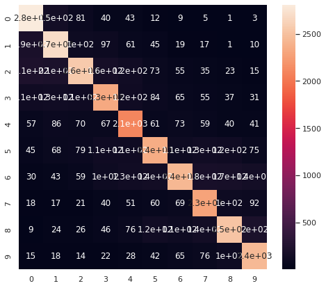
Testing Confusion Matrix
precision recall f1-score support
1 0.49 0.58 0.53 840
2 0.33 0.37 0.35 794
3 0.28 0.24 0.26 824
4 0.23 0.21 0.22 782
5 0.17 0.21 0.18 604
6 0.24 0.20 0.22 813
7 0.23 0.20 0.21 842
8 0.23 0.22 0.22 736
9 0.29 0.27 0.28 818
10 0.41 0.47 0.44 712
accuracy 0.30 7765
macro avg 0.29 0.30 0.29 7765
weighted avg 0.29 0.30 0.29 7765
<AxesSubplot:>
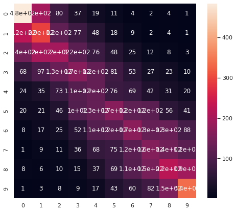
gs_results = pd.DataFrame(grid.cv_results_)
params = list(gs_results.columns[gs_results.columns.str.contains('param')].values)
params.pop(-1)
display(gs_results.head())
print(params)
| mean_fit_time | std_fit_time | mean_score_time | std_score_time | param_bootstrap | param_class_weight | param_criterion | param_max_features | param_min_samples_leaf | param_min_samples_split | ... | split0_test_score | split1_test_score | split2_test_score | split3_test_score | split4_test_score | split5_test_score | split6_test_score | mean_test_score | std_test_score | rank_test_score | |
|---|---|---|---|---|---|---|---|---|---|---|---|---|---|---|---|---|---|---|---|---|---|
| 0 | 0.118039 | 0.002019 | 0.004001 | 0.000212 | True | balanced | gini | auto | 1 | 2 | ... | 0.230787 | 0.235745 | 0.239351 | 0.232139 | 0.247520 | 0.238278 | 0.222272 | 0.235156 | 0.007317 | 610 |
| 1 | 0.518118 | 0.006517 | 0.012629 | 0.000356 | True | balanced | gini | auto | 1 | 2 | ... | 0.262114 | 0.268425 | 0.253324 | 0.281271 | 0.273670 | 0.272543 | 0.259693 | 0.267291 | 0.008820 | 309 |
| 2 | 0.113497 | 0.004069 | 0.003702 | 0.000130 | True | balanced | gini | auto | 1 | 4 | ... | 0.231463 | 0.231012 | 0.236196 | 0.249268 | 0.243012 | 0.240532 | 0.229937 | 0.237345 | 0.006712 | 567 |
| 3 | 0.482682 | 0.004648 | 0.012108 | 0.000515 | True | balanced | gini | auto | 1 | 4 | ... | 0.268875 | 0.277890 | 0.272481 | 0.275186 | 0.275248 | 0.274121 | 0.272543 | 0.273764 | 0.002630 | 269 |
| 4 | 0.104504 | 0.004581 | 0.003597 | 0.000109 | True | balanced | gini | auto | 1 | 6 | ... | 0.232590 | 0.227406 | 0.237773 | 0.246338 | 0.249549 | 0.232191 | 0.238954 | 0.237829 | 0.007357 | 559 |
5 rows × 22 columns
['param_bootstrap', 'param_class_weight', 'param_criterion', 'param_max_features', 'param_min_samples_leaf', 'param_min_samples_split', 'param_n_estimators']
target = 'mean_test_score'
moodsdf = pd.DataFrame()
for col in params:
for truff in gs_results[col].unique():
try:
group = gs_results.loc[gs_results[col] == truff][target]
pop = gs_results.loc[~(gs_results[col] == truff)][target]
stat, p, m, table = stats.median_test(group, pop)
median = np.median(group)
mean = np.mean(group)
size = len(group)
moodsdf = pd.concat([moodsdf,
pd.DataFrame([col, truff,
stat, p, m, mean, median, size,
table]).T])
except:
print(col, truff)
moodsdf.columns = ['descriptor', 'group', 'pearsons_chi_square', 'p_value',
'grand_median', 'group_mean', 'group_median', 'size',
'table']
moodsdf['p_value'] = moodsdf['p_value'].astype(float)
print(moodsdf.shape)
confidence_level = 0.05
moodsdf = moodsdf.loc[(moodsdf['p_value'] < confidence_level)].sort_values('group_median')
moodsdf = moodsdf.sort_values('group_median').reset_index(drop=True)
print("Clearing high p-value...")
print(moodsdf.shape)
param_class_weight None
(17, 9)
Clearing high p-value...
(2, 9)
moodsdf
| descriptor | group | pearsons_chi_square | p_value | grand_median | group_mean | group_median | size | table | |
|---|---|---|---|---|---|---|---|---|---|
| 0 | param_n_estimators | 1 | 644.006173 | 4.494276e-142 | 0.260964 | 0.243444 | 0.243093 | 324 | [[0, 324], [324, 0]] |
| 1 | param_n_estimators | 5 | 644.006173 | 4.494276e-142 | 0.260964 | 0.280889 | 0.281234 | 324 | [[324, 0], [0, 324]] |
for param in params:
sns.boxplot(x=gs_results[param], y=gs_results[target])
plt.show()
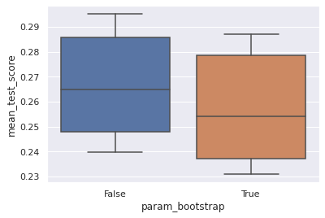
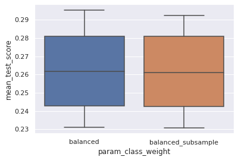
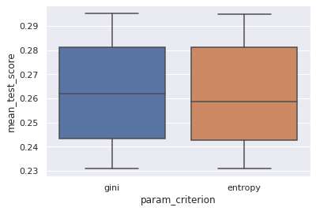
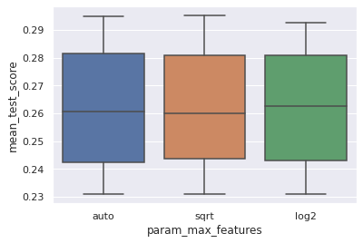
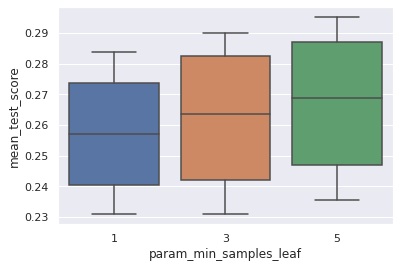
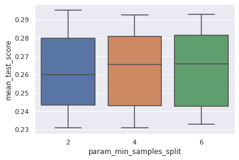
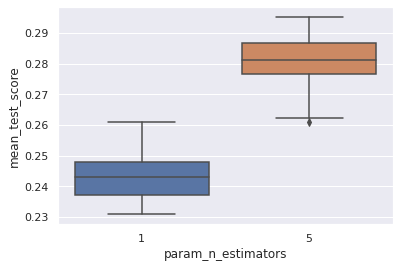
Round 2¶
Let's take those best parameters and dig a little deaper
print(grid.best_params_)
{'bootstrap': False, 'class_weight': 'balanced', 'criterion': 'gini', 'max_features': 'sqrt', 'min_samples_leaf': 5, 'min_samples_split': 2, 'n_estimators': 5}
param_grid = {'bootstrap': [True, False],
'criterion': ['gini', 'entropy']}
grid = GridSearchCV(RandomForestClassifier(min_samples_leaf=5,
min_samples_split=2,
max_features='sqrt',
class_weight='balanced',
n_estimators=100), param_grid, cv=5, n_jobs=-1, verbose=2)
grid.fit(X_train, y_train)
print(grid.best_params_)
Fitting 5 folds for each of 4 candidates, totalling 20 fits
{'bootstrap': False, 'criterion': 'entropy'}
gs_results2 = pd.DataFrame(grid.cv_results_)
params = list(gs_results2.columns[gs_results2.columns.str.contains('param')].values)
params.pop(-1)
display(gs_results2.head())
print(params)
| mean_fit_time | std_fit_time | mean_score_time | std_score_time | param_bootstrap | param_criterion | params | split0_test_score | split1_test_score | split2_test_score | split3_test_score | split4_test_score | mean_test_score | std_test_score | rank_test_score | |
|---|---|---|---|---|---|---|---|---|---|---|---|---|---|---|---|
| 0 | 20.133523 | 0.372951 | 0.581618 | 0.020547 | True | gini | {'bootstrap': True, 'criterion': 'gini'} | 0.306825 | 0.305909 | 0.309612 | 0.314281 | 0.307036 | 0.308733 | 0.003035 | 2 |
| 1 | 52.458941 | 0.532249 | 0.603756 | 0.138301 | True | entropy | {'bootstrap': True, 'criterion': 'entropy'} | 0.311494 | 0.297859 | 0.314925 | 0.312188 | 0.304460 | 0.308185 | 0.006211 | 4 |
| 2 | 31.101482 | 0.656385 | 0.763153 | 0.090014 | False | gini | {'bootstrap': False, 'criterion': 'gini'} | 0.306665 | 0.303494 | 0.314603 | 0.313798 | 0.302689 | 0.308250 | 0.005044 | 3 |
| 3 | 53.006182 | 7.189164 | 0.337193 | 0.088254 | False | entropy | {'bootstrap': False, 'criterion': 'entropy'} | 0.307147 | 0.303333 | 0.317501 | 0.313476 | 0.307841 | 0.309860 | 0.005010 | 1 |
['param_bootstrap', 'param_criterion']
for param in params:
sns.boxplot(x=gs_results[param], y=gs_results[target])
plt.show()


Round 3¶
And now tune model complexity
# Cell for Exercise 2
r2 = []
for n_estimators in range(10,100,10):
model = RandomForestClassifier(n_estimators=n_estimators,
bootstrap=False,
criterion='entropy',
min_samples_leaf=5,
min_samples_split=2,
max_features='sqrt',
class_weight='balanced')
model.fit(X_train, y_train)
y_pred = model.predict(X_test)
r2.append([r2_score(y_train, model.predict(X_train)),
r2_score(y_test, model.predict(X_test))])
score = np.array(r2)
score1 = score[:,0]
score2 = score[:,1]
fig, ax = plt.subplots(figsize=(10,5))
ax.plot(range(10,100,10), score1, ls='', marker='.', color='blue', label='Train')
ax.plot(range(10,100,10), score2, ls='', marker='o', color='red', label='Test')
ax.set_title("Scores with Increasing Model Complexity")
ax.set_xlabel("Trees in the Forest")
ax.set_ylabel("$R^2$")
ax.legend()
<matplotlib.legend.Legend at 0x7f20e6d99a00>
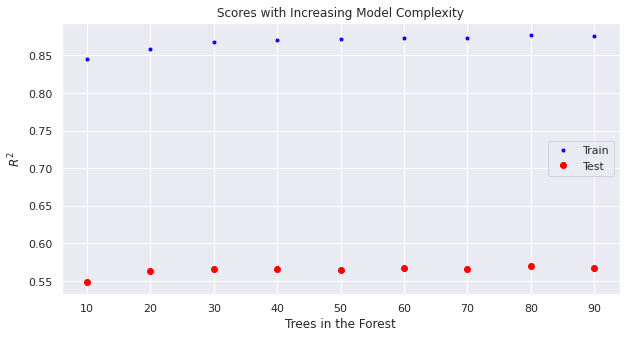
model = grid.best_estimator_
model.n_estimators = 80
model.fit(X_train, y_train)
print(f"Train Acc: {accuracy_score(y_train, model.predict(X_train)):.2f}")
print(f"Test Acc: {accuracy_score(y_test, model.predict(X_test)):.2f}")
y_pred = model.predict(X_train)
print("Training Confusion Matrix")
print(classification_report(y_train, y_pred, zero_division=0))
fig, ax = plt.subplots(1, 1, figsize = (8,7))
sns.heatmap(confusion_matrix(y_train,y_pred), annot=True, ax=ax)
plt.show()
y_pred = model.predict(X_test)
print("Testing Confusion Matrix")
print(classification_report(y_test, y_pred, zero_division=0))
fig, ax = plt.subplots(1, 1, figsize = (8,7))
sns.heatmap(confusion_matrix(y_test,y_pred), annot=True, ax=ax)
Train Acc: 0.90
Test Acc: 0.32
Training Confusion Matrix
precision recall f1-score support
1 0.86 0.95 0.90 3148
2 0.88 0.91 0.90 3241
3 0.92 0.86 0.89 3458
4 0.90 0.88 0.89 3075
5 0.87 0.91 0.89 2658
6 0.91 0.86 0.89 3198
7 0.93 0.85 0.89 3426
8 0.90 0.93 0.91 2759
9 0.91 0.89 0.90 3274
10 0.88 0.94 0.91 2819
accuracy 0.90 31056
macro avg 0.90 0.90 0.90 31056
weighted avg 0.90 0.90 0.90 31056
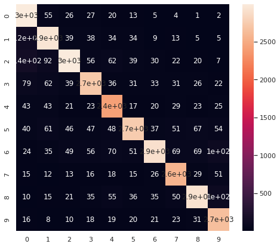
Testing Confusion Matrix
precision recall f1-score support
1 0.51 0.60 0.55 840
2 0.34 0.38 0.36 794
3 0.30 0.26 0.28 824
4 0.27 0.24 0.26 782
5 0.17 0.21 0.19 604
6 0.25 0.22 0.23 813
7 0.25 0.21 0.23 842
8 0.25 0.24 0.24 736
9 0.33 0.30 0.31 818
10 0.44 0.54 0.48 712
accuracy 0.32 7765
macro avg 0.31 0.32 0.31 7765
weighted avg 0.31 0.32 0.32 7765
<AxesSubplot:>
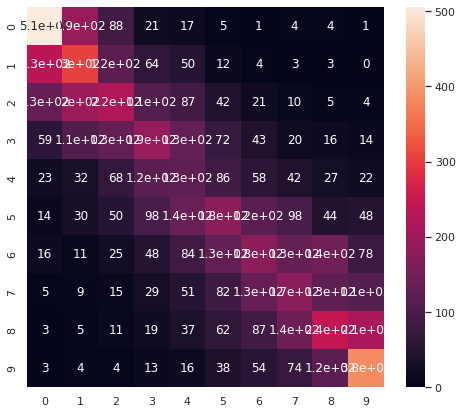
After all that work we don't get much lift from the random forest with default hyperparameters
Conclusion¶
The Final Classification Model¶
Final model had an F1 score ranging from 19-55% depending on class and a total accuracy of 32%
This model could be used to suggest a price band for would-be airbnb hosts in NYC; or a price estimator to assess how changes in listing attributes wil affect price. A potential pitfall could be that new airbnb hosts will not have many total reviews or high variance in the reviews per month.
We can currate price signal from the available feature inputs:
neighbourhood_groupneighbourhoodlongitude/latituderoom_typepriceminimum_nightsnumber_of_reviewsreviews_per_monthcalculated_host_listings_countavailability_365
What worked:
- dropping nans row-wise allowed us to keep the
reviews_per_monthcolumn, which gave us an \(R^2\) boost of 10% - converting from a regression problem to a classification problem allowed us to deal with the long, high-price tail
- converting one hot encoded vectors to the first principal components kept us from overfitting (although this was not important for the random forrest model)
More to try:
- change
last_review_datefromdatetimeorstrtoint - use PCA for outlier removal based on the input data
X - imput missing values for
reviews_per_monthto capture an additional 10,000 datapoints
Additional Strategies¶
Removing outliers based on the target variable, price, could also be a valid strategy. If we were to employ the model, we would have to be transparent that it should be used to predict prices in the sub $700 range, which is most of the Airbnb business in NYC anyway. At the end of the day, our decisions about model creation need to serve the business need.